Finalized demo and activities within the existing 150-minute route. Earlier decks remain archived. Current source: the 71-slide paced deck. This edition retains 34 live slides and 37 hidden reference slides.
2. Today’s sequence Anchor 02
Keep the existing content, visual and route status.
Previous slide 2Previous slide text
Today’s sequence
Section / Focus / proposed time
1 · Python in Unreal / Opening, setup, operation · 32 min
2 · Tool demonstrations / Contributors · 35 min; then break · 15 min
3 · Tool assessment / Initial judgment and evidence · 8 min
4 · UI/UX for artist tools / Concepts and task preparation · 20 min
5 · Peer testing / Three rounds · 35 min; synthesis · 5 min
Final slide 2
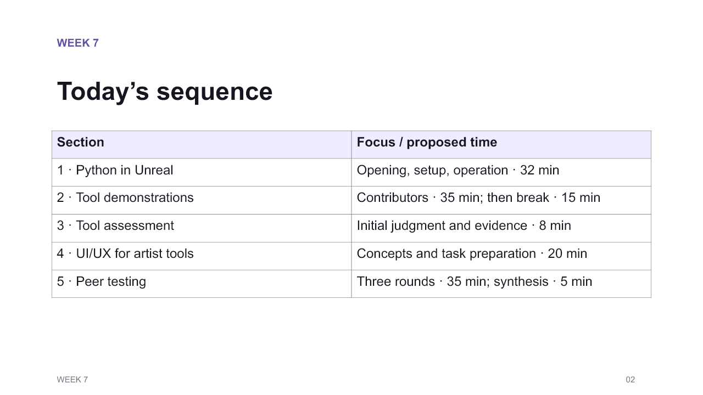
Read aloud
Our route moves from a working operation to the person who uses it. After the demonstrations and break, keep your first tool assessment. We will revisit it with UX concepts, then immediately test a peer’s tool. The timing shown here is a 150-minute proposal; the added visual slides share these blocks rather than adding time.
Instructor facilitation
TIME BUDGET: 0.5 min. Elapsed 0.5–1. Show the route. No round-robin discussion here. This expanded proposal differs from the October 11 clock agenda, which assigned only ten minutes to UX. Confirm the teaching schedule after rehearsal. Protect the four-minute task preparation and peer attempts.
Teaching rationale
Retain the topic and refine its explanation within the assessment, overview and peer-testing sequence.
3. What you should be able to explain Anchor 02A
Keep the existing content, visual and route status.
Previous slide 3Previous slide text
What you should be able to explain
Scope: what will change?
Evidence: did it work?
Use: can a peer succeed?
What would make you trust a tool with your project?
Course Unreal fixture · scope and verification are separate checks
Final slide 3
Read aloud
By the end, you should be able to explain scope, evidence, and the user’s task. A script finishing without an exception is only one part of success. Keep one tool from your own work in mind as we go.
Instructor facilitation
Optional reference only. Do not insert this as an additional explanation during the 150-minute route. Pause for a prediction before supplying an explanation. Use the slide question to connect the example to a student tool.
Teaching rationale
Hide from the normal slideshow. Fold the outcomes into the section opening. Live destination: S1.
4. Tools are part of game production Anchor 02B
Keep the existing content, visual and route status.
Previous slide 4Previous slide text
Tools are part of game production
Which repeated task would you remove from this workflow?
Final slide 4
Read aloud
This is Guerrilla’s Decima level editor, shown in its Horizon Zero Dawn pipeline talk. The class-sized question is smaller: which repeated step prevents an artist from checking their work? Keep that task in view as we learn a new host API.
Instructor facilitation
Optional reference only. Do not insert this as an additional explanation during the 150-minute route. Pause for a prediction before supplying an explanation. Use the slide question to connect the example to a student tool.
Teaching rationale
Hide from the normal slideshow. Production motivation is already demonstrated by contributor tools and the retained GDC cases. Live destination: 11.
5. Python in Unreal Anchor S1
Keep the existing content, visual and route status.
Previous slide 5
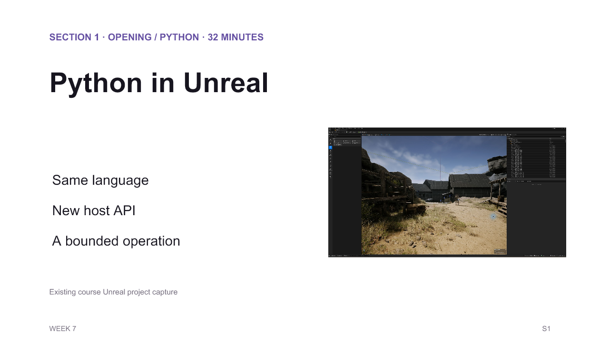
Previous slide text
Python in Unreal
Same language
New host API
A bounded operation
Existing course Unreal project capture
Final slide 5
Read aloud
We are moving from Maya tooling into Unreal. Keep the reusable Python ideas; learn which editor objects and operations the new host exposes. The general Python language carries over from Maya. The host objects and API change. Keep asking what the tool affects and how the artist will verify it.
Instructor facilitation
TIME BUDGET: 0.25 min. Elapsed 1–1.25. Same Python language, new host API.
Teaching rationale
Add an agenda-matched section title with visual breathing room; transition within the allocated block.
6. Python across applications Anchor 05
Keep the existing content, visual and route status.
Previous slide 6Previous slide text
Python across applications
Keep loops, functions, conditions, and data structures
Replace Maya commands with Unreal editor APIs
Carry over explicit inputs, scope, and useful reports
Which part of your Maya tool is independent of Maya?
Final slide 6
Read aloud
Your general Python knowledge carries over. The objects and operations exposed by the host application change. Keep reusable rules separate from host-specific operations where practical. Here, unreal is the module exposed by the editor; installing ordinary Python alone does not create an Unreal editor session.
Instructor facilitation
Optional reference only. Do not insert this as an additional explanation during the 150-minute route. Pause for a prediction before supplying an explanation. Use the slide question to connect the example to a student tool.
Teaching rationale
Hide from the normal slideshow. Carry the same-language/new-host explanation in the opening notes. Live destination: S1.
7. Python setup in Unreal Anchor 03
Keep the existing content, visual and route status.
Previous slide 7Previous slide text
Python setup in Unreal
Enable project plugins; restart
Output Log → Python input mode
Is the input field running Python or console commands?
Historical course setup captures · verify placement in the teaching engine
Final slide 7
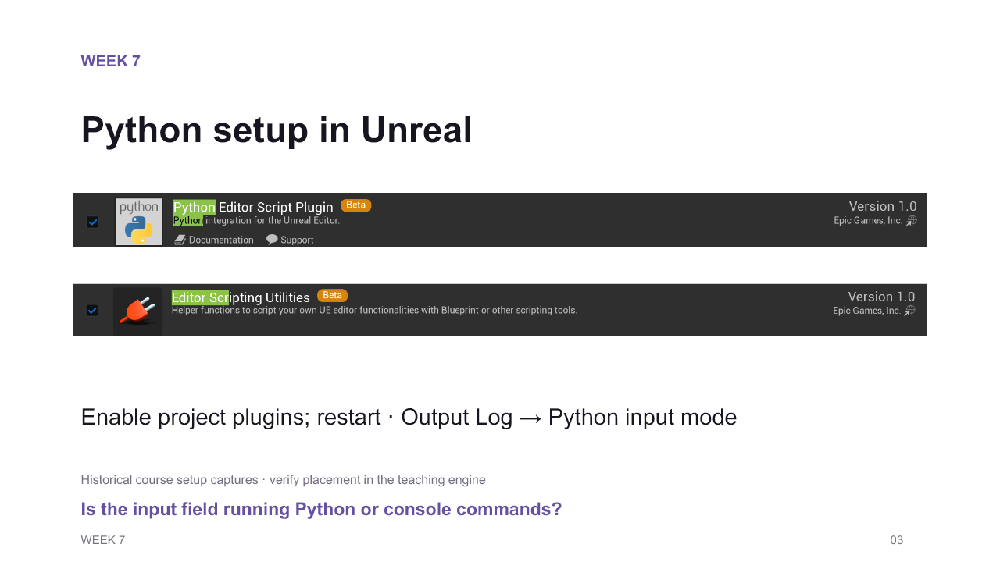
Read aloud
Enable these plugins for the project you are using and restart. Switch the Output Log input to Python. Unreal supplies its embedded interpreter; do not assume your terminal interpreter has the same modules. We are using Python for editor automation, not runtime gameplay.
Instructor facilitation
TIME BUDGET: 2.75 min. Elapsed 1.25–4. Show the prepared editor. Plugin setup is a demonstration, not an installation workshop. Pause for a prediction before supplying an explanation. Use the slide question to connect the example to a student tool.
Teaching rationale
Retain the topic and refine its explanation within the assessment, overview and peer-testing sequence.
8. First execution Anchor 04
Keep the existing content, visual and route status.
Previous slide 8
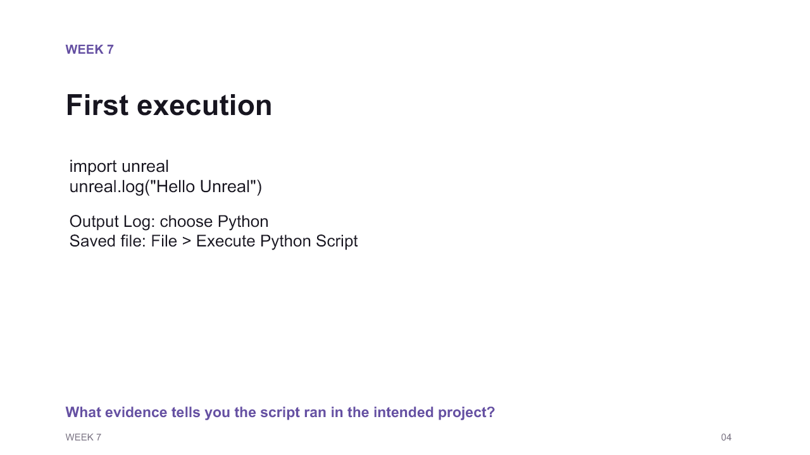
Previous slide text
First execution
Output Log: choose Python
Saved file: File > Execute Python Script
import unreal
unreal.log("Hello Unreal")
What evidence tells you the script ran in the intended project?
Final slide 8
Read aloud
Run the small logging example first. Then execute a saved script. Project Content/Python is one of the supported search locations. A saved file gives us something we can inspect, revise, and rerun. Watch the Output Log rather than assuming silence means success.
Instructor facilitation
TIME BUDGET: 2 min. Elapsed 4–6. One log statement and its output. Allow one short clarification. Pause for a prediction before supplying an explanation. Use the slide question to connect the example to a student tool.
Teaching rationale
Retain the topic and refine its explanation within the assessment, overview and peer-testing sequence.
9. Unreal’s object model Anchor 06
Keep the existing content, visual and route status.
Previous slide 9Previous slide text
Unreal’s object model
Entity / Example / Why scope matters
Asset / A Static Mesh in the Content Browser / May be referenced by many placements
Actor / One placed crate in the level / Has its own label and transform
Component / The Actor’s Static Mesh Component / References the mesh and can hold overrides
If two Actors share a mesh, which edits could affect both?
Final slide 9
Read aloud
A placed object and the asset it references are not the same thing. In our existing fixture, six prop Actors use five shared mesh assets. Editing an Actor transform is different from changing the shared asset. A component can also carry a material override. Always identify which layer your operation edits.
Instructor facilitation
Optional reference only. Do not insert this as an additional explanation during the 150-minute route. Pause for a prediction before supplying an explanation. Use the slide question to connect the example to a student tool.
Teaching rationale
Hide from the normal slideshow. Explain Actors, Components and shared assets on the existing relationship diagram. Live destination: 06A.
10. Shared asset, separate placements Anchor 06A
Keep the existing content, visual and route status.
Previous slide 10Previous slide text
Shared asset, separate placements
Where would you make a change that affects only Actor A?
Conceptual relationship · the mesh asset can have multiple references
Final slide 10
Read aloud
Trace both references to the same mesh asset. The Actors can have different transforms. Changing shared geometry can affect both placements. For a material change, determine whether you are changing the shared asset or a component override before building the operation. An Actor is a placement in the level. Its Static Mesh Component references the shared mesh asset and may carry an override. Moving one Actor differs from editing the shared asset.
Instructor facilitation
TIME BUDGET: 3 min. Elapsed 6–9. Asset versus Actor versus Component. Include a 45-second scope prediction. Pause for a prediction before supplying an explanation. Use the slide question to connect the example to a student tool.
Teaching rationale
Make mutation scope visible before selection and editing.
11. Selection is an input Anchor 07
Keep the existing content, visual and route status.
Previous slide 11
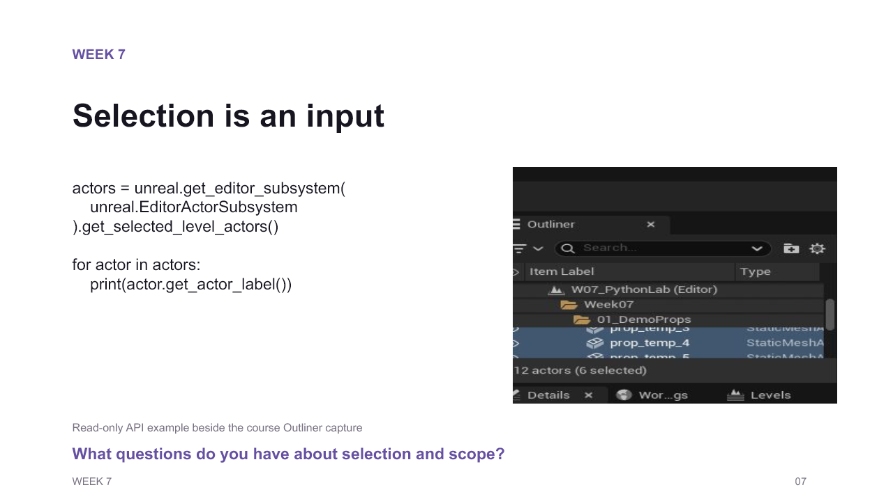
Previous slide text
Selection is an input
actors = unreal.get_editor_subsystem(
unreal.EditorActorSubsystem
).get_selected_level_actors()
for actor in actors:
print(actor.get_actor_label())
What questions do you have about selection and scope?
Read-only API example beside the course Outliner capture
Final slide 11
Read aloud
This read-only example asks the editor Actor subsystem for selected level Actors. It does not retrieve selected Content Browser assets. We can report the labels before attempting any edits. Next check whether each object supports the operation and explain any skipped items.
Instructor facilitation
TIME BUDGET: 3 min. Elapsed 9–12. Inspect selected Actors. Reserve 45 seconds for questions about selection. Pause for a prediction before supplying an explanation. Use the slide question to connect the example to a student tool.
Teaching rationale
Retain the topic and refine its explanation within the assessment, overview and peer-testing sequence.
12. Disk paths and Unreal asset paths Anchor 07A
Keep the existing content, visual and route status.
Previous slide 12Previous slide text
Disk paths and Unreal asset paths
Kind / Illustrative example / Used for
Disk file / C:/Exports/Crate.fbx / Input to an importer
Content folder / /Game/Props / Destination package folder
Object path / /Game/Props/Crate.Crate / A particular Unreal object
Which path belongs in the source-file field?
Final slide 12
Read aloud
These are illustrative paths, not files supplied with this slide. Keep the source file, destination folder, and imported object identity distinct. An import task takes a filename and a destination path. Read its resulting object paths to learn what was actually created.
Instructor facilitation
Optional reference only. Do not insert this as an additional explanation during the 150-minute route. Pause for a prediction before supplying an explanation. Use the slide question to connect the example to a student tool.
Teaching rationale
Hide from the normal slideshow. Explain source-file and Unreal destination paths during the handoff. Live destination: 10.
13. Maya and Unreal handoff Anchor 10
Keep the existing content, visual and route status.
Previous slide 13Previous slide text
Maya and Unreal handoff
What must remain stable when the Maya source changes?
Course schematic · file exchange and revision loop
Final slide 13
Read aloud
Treat the file handoff as the first bridge. Remote control between applications is not necessary to explain it. Make one source revision, then check that the intended Unreal asset updates. Importer behavior and settings need to be rehearsed in the engine version used for class. The disk file names the exported source, while /Game/Props names an Unreal destination folder. Watch one prepared revision and check that the intended asset updates. What questions do you have about this handoff?
Instructor facilitation
TIME BUDGET: 7 min. Elapsed 12–19. 1 min handoff diagram and paths; 5 min prepared export/import and one revision; 1 min inspection/questions. Pause for a prediction before supplying an explanation. Use the slide question to connect the example to a student tool.
Teaching rationale
Retain the topic and refine its explanation within the assessment, overview and peer-testing sequence.
14. Explicit import settings Anchor 10A
Keep the existing content, visual and route status.
Previous slide 14Previous slide text
Explicit import settings
Configure options for the chosen importer
Inspect imported_object_paths and the result
task = unreal.AssetImportTask()
task.filename = source_file
task.destination_path = "/Game/Props"
task.automated = True
task.save = False
tools = unreal.AssetToolsHelpers.get_asset_tools()
tools.import_asset_tasks([task])
What should happen when the destination already exists?
Final slide 14
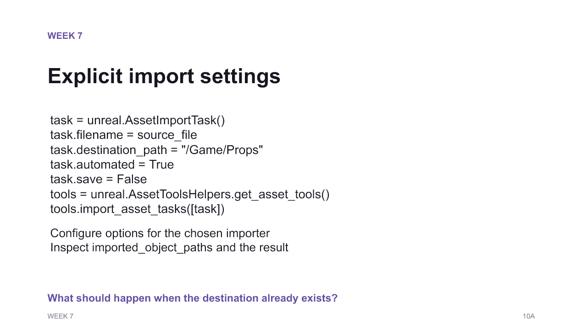
Read aloud
This is an illustrative API excerpt: source_file must name an existing input and the appropriate importer options still need configuration. Automated import suppresses interaction; it does not prove that the result matches our intent. Saving is deliberately separate here. Reimport and replacement policies require explicit choices rather than relying on this minimal snippet.
Instructor facilitation
Optional reference only. Do not insert this as an additional explanation during the 150-minute route. Pause for a prediction before supplying an explanation. Use the slide question to connect the example to a student tool.
Teaching rationale
Hide from the normal slideshow. Keep raw importer setup as reference; use the prepared handoff during class. Live destination: 10.
15. Material Setup: a reviewed change Anchor 09
Replace the title, body/visual and read-aloud notes with the finalized version below. Keep the anchor, position in the live route, and time allocation.
Previous slide 15
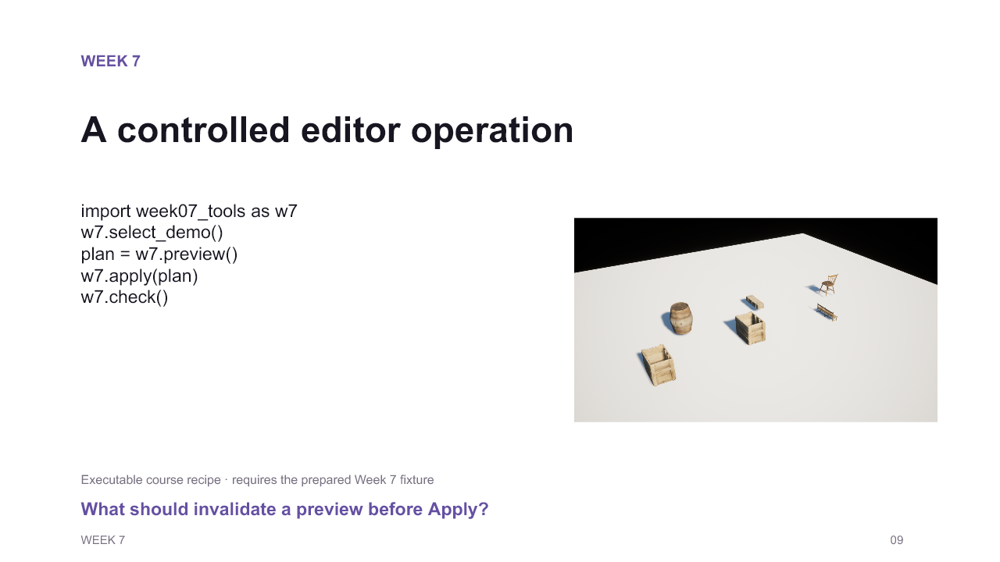
Previous slide text
A controlled editor operation
import week07_tools as w7
w7.select_demo()
plan = w7.preview()
w7.apply(plan)
w7.check()
What should invalidate a preview before Apply?
Executable course recipe · requires the prepared Week 7 fixture
Final slide 15
Read aloud
We are using Material & VFX Tools in the running Unreal editor. Both cubes share a mesh. Only the near target should change. Predict what must remain untouched. I select the target Actor and the three prepared textures, choose a fresh MI_ name and slot zero, then Preview. The plan names one instance and one component assignment. After Apply, the target is blue and the protected cube remains plain. Preview with the same name blocks overwrite. Undo restores the assignment, but the new instance remains for separate cleanup. What evidence establishes that the tool respected scope?
Instructor facilitation
Seven minutes, elapsed 19–26. Follow the Live Demo Run Sheet. Native Tools > Material & VFX Tools; PySide shares the live backend. Use W07_MaterialVFXLab. If setup fails for 30 seconds, open live-demo.html and teach the same prediction and evidence sequence from actual captures. Do not save rehearsal map changes.
Teaching rationale
Finalize the classroom activity while preserving the existing time allocation and review anchor.
16. The backend checks the promise Anchor 09F
Keep the existing content, visual and route status.
Previous slide 16Previous slide text
The backend checks the promise
current = preview()
if plan != current:
raise RuntimeError(
"Preview is stale or edited. "
"Run preview() again and review it."
)
demo.py · actual guard excerpt; message wrapped for the slide
Final slide 16
Read aloud
This is the guard in our actual Apply implementation. It recomputes the plan immediately before mutation and compares it with the reviewed plan. A changed selection or edited plan must trigger another preview. The UI may disable Apply when it notices a change, but that is not sufficient protection: callers can invoke the backend directly. The backend therefore checks the promise independently. Ask students which other input belongs in the plan if they extend the operation to destination folders or material assignments.
Instructor facilitation
Optional reference only. Do not insert this as an additional explanation during the 150-minute route.
Teaching rationale
Hide from the normal slideshow. State the stale-preview rule during the actual operation; backend implementation stays available. Live destination: 09.
17. Blueprints as an editor interface Anchor 08
Keep the existing content, visual and route status.
Previous slide 17Previous slide text
Blueprints as an editor interface
Layer / Responsibility
Editor Utility Widget / Inputs, scope, actions, and result display
Execute Python Script / Pass named inputs and outputs
Python operation / Validate, perform the operation, report results
Should the button contain the whole tool—or call one operation?
Final slide 17
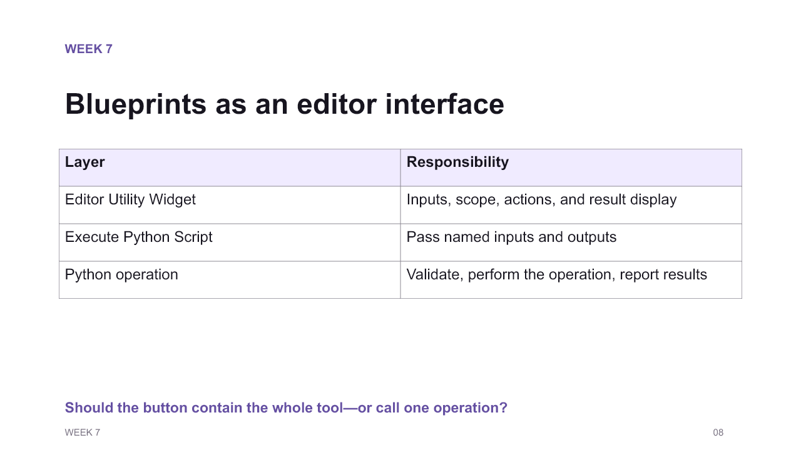
Read aloud
This is the Blueprint connection we need today. Epic supports Python execution nodes in editor-only Blueprints such as Editor Utility Widgets. The Execute Python Script node can expose custom inputs and outputs. It does not make Python a gameplay scripting language. Its execution-success output is not a substitute for checking whether the artist’s task succeeded.
Instructor facilitation
Optional reference only. Do not insert this as an additional explanation during the 150-minute route. Pause for a prediction before supplying an explanation. Use the slide question to connect the example to a student tool.
Teaching rationale
Hide from the normal slideshow. Use the architecture diagram for the brief Blueprint tie-in. Live destination: 08A.
18. One operation, multiple interfaces Anchor 08A
Keep the existing content, visual and route status.
Previous slide 18Previous slide text
One operation, multiple interfaces
Which logic should survive a complete UI redesign?
Course architecture sketch · alternate UI entry points
Final slide 18
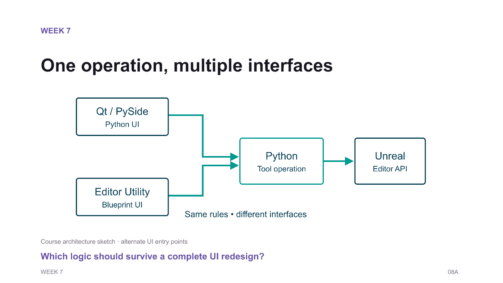
Read aloud
The UI gathers inputs and displays results. A shared operation owns the rules. An Editor Utility Widget can call that operation through an editor-only Python execution node. A Qt interface can call the same Python function. Sharing the operation helps keep the rules consistent. An Editor Utility Widget can pass inputs to editor-only Python execution. That connection does not make Python a runtime gameplay language.
Instructor facilitation
TIME BUDGET: 2 min. Elapsed 26–28. One shared operation behind Qt or an Editor Utility Widget. No Blueprint construction. Pause for a prediction before supplying an explanation. Use the slide question to connect the example to a student tool.
Teaching rationale
Connect Qt, Blueprint and Python without teaching a second implementation stack.
19. Starting state Anchor 09A
Keep the existing content, visual and route status.
Previous slide 19
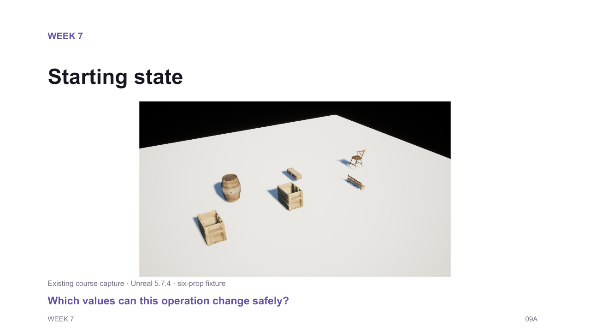
Previous slide text
Starting state
Which values can this operation change safely?
Existing course capture · Unreal 5.7.4 · six-prop fixture
Final slide 19
Read aloud
This is the starting state of the course fixture. The prepared operation changes Actor labels and positions, not the shared mesh assets. Predict the result before looking at the organized capture.
Instructor facilitation
Optional reference only. Do not insert this as an additional explanation during the 150-minute route. Pause for a prediction before supplying an explanation. Use the slide question to connect the example to a student tool.
Teaching rationale
Hide from the normal slideshow. Use the actual fixture during the demo; keep this capture as fallback. Live destination: 09.
20. Result inspection Anchor 09B
Keep the existing content, visual and route status.
Previous slide 20Previous slide text
Result inspection
What does this image prove—and what still needs checking?
Existing course capture · same fixture after the controlled operation
Final slide 20
Read aloud
The second capture shows the arranged props. An image alone does not verify labels, selection boundaries, or recovery. Use the tool’s report and an Undo check to establish those properties. Compare the capture with the tool’s report before drawing a conclusion.
Instructor facilitation
Optional reference only. Do not insert this as an additional explanation during the 150-minute route. Pause for a prediction before supplying an explanation. Use the slide question to connect the example to a student tool.
Teaching rationale
Hide from the normal slideshow. Verify the live result during the demo; keep this capture as fallback. Live destination: 09.
21. VFX Placement: transfer the workflow Anchor 09D
Replace the title, body/visual and read-aloud notes with the finalized version below. Keep the anchor, position in the live route, and time allocation.
Previous slide 21
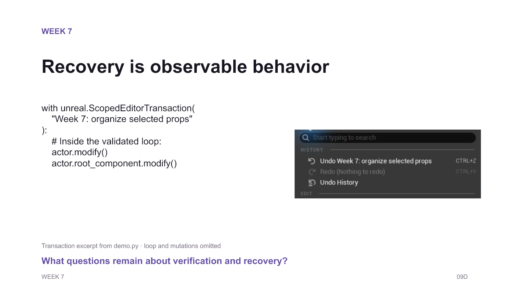
Previous slide text
Recovery is observable behavior
with unreal.ScopedEditorTransaction(
"Week 7: organize selected props"
):
# Inside the validated loop:
actor.modify()
actor.root_component.modify()
What questions remain about verification and recovery?
Transaction excerpt from demo.py · loop and mutations omitted
Final slide 21
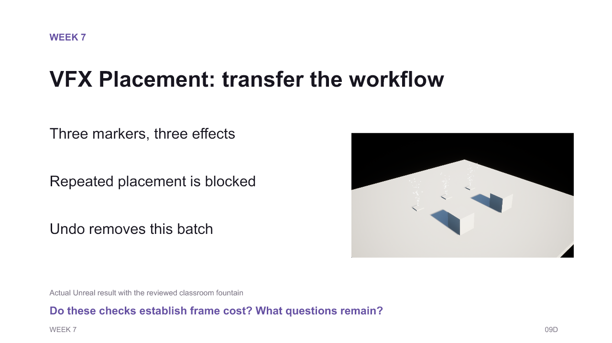
Read aloud
The three tagged markers define this placement. We choose VFX Placement, scale one, and Preview. The plan names three effects and their positions. Apply creates three visible fountains. Previewing these occupied anchors again blocks a second batch. Undo removes the placed effects and leaves the pedestals. These checks establish placement behavior and recovery in this fixture. They do not measure frame cost on target hardware. What questions remain about performance or wider production use?
Instructor facilitation
Four minutes, elapsed 28–32. Select W07_VFXAnchor_1 through _3. Preview, Apply, inspect, repeat-block, Undo. Stop at 4:02. If needed, use live-demo.html steps 4–7 within the same slot. Screenshot is after material Undo. No automatic scene reset or Save All.
Teaching rationale
Finalize the classroom activity while preserving the existing time allocation and review anchor.
22. Tool demonstrations Anchor 11
Keep the existing content, visual and route status.
Previous slide 22
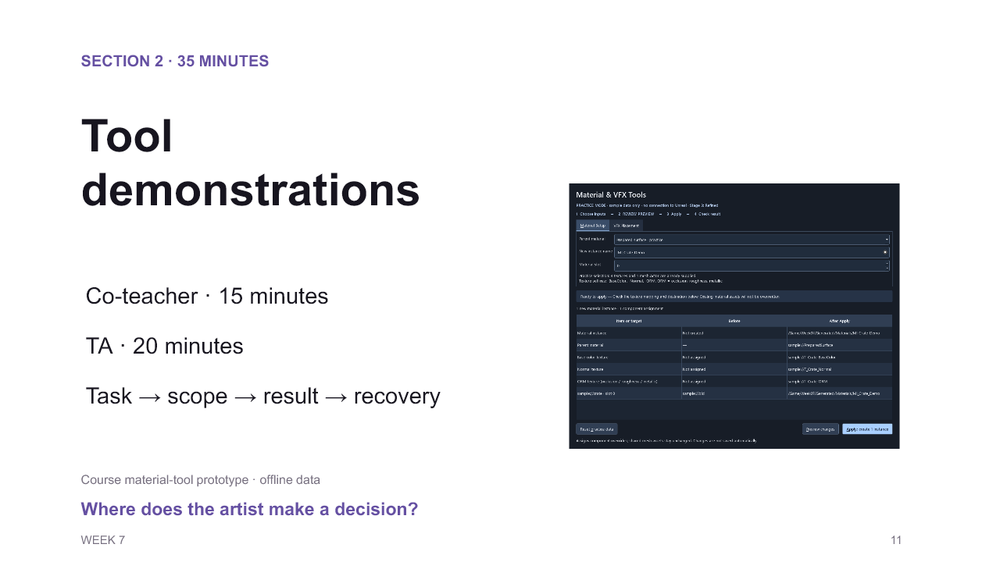
Previous slide text
Tool demonstrations
Co-teacher · 15 minutes
TA · 20 minutes
Task → scope → result → recovery
Where does the artist make a decision?
Course material-tool prototype · offline data
Final slide 22
Read aloud
As you watch the demonstrations, identify the task each tool supports, the scope it changes, how the result is verified, and how the artist recovers. Hold onto examples that connect to your own project. The presenter slots include their questions and handoffs.
Instructor facilitation
TIME BUDGET: 35 min. Elapsed 32–67. Co-teacher 15 min, TA 20 min. Questions, introductions and transitions are inside those slots. Pause for a prediction before supplying an explanation. Use the slide question to connect the example to a student tool.
Teaching rationale
Retain the topic and refine its explanation within the assessment, overview and peer-testing sequence.
23. Break Anchor 13
Keep the existing content, visual and route status.
Previous slide 23Previous slide text
Break
When we return: assess a tool
Then revisit your assessment through UI/UX
Apply the same thinking in peer testing
Final slide 23
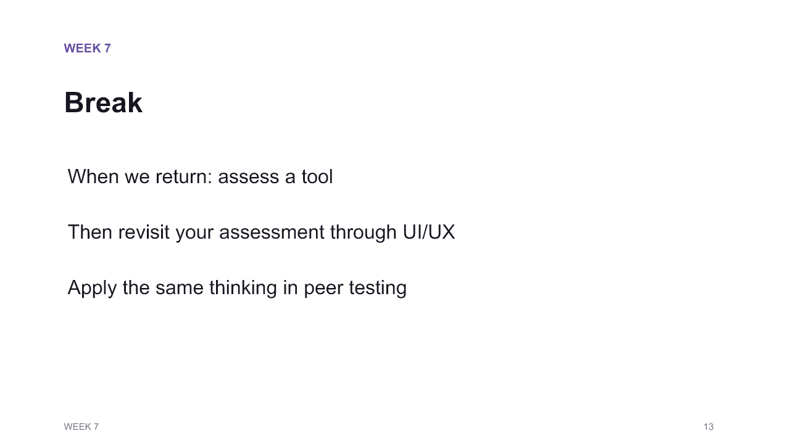
Read aloud
Take the break now. When we return, keep your initial impressions: we will use them as evidence for the discussion rather than replacing them with a checklist immediately.
Instructor facilitation
TIME BUDGET: 15 min. Elapsed 67–82. Full break; resume at elapsed 82:00.
Teaching rationale
Retain the topic and refine its explanation within the assessment, overview and peer-testing sequence.
24. Tool assessment Anchor S3
Keep the existing content, visual and route status.
Previous slide 24
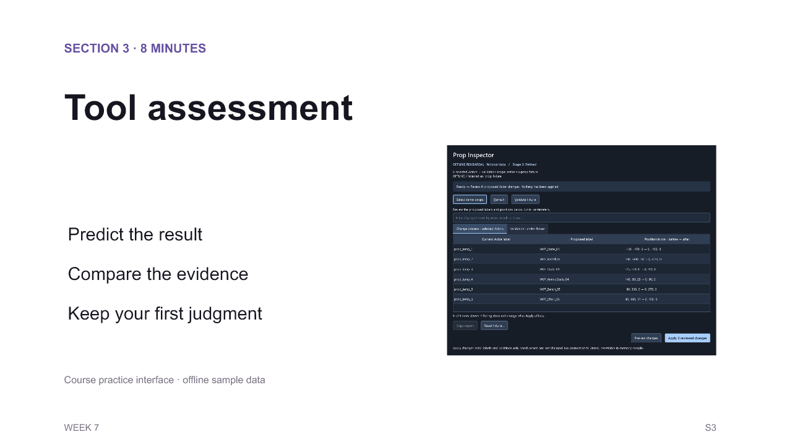
Previous slide text
Tool assessment
Predict the result
Compare the evidence
Keep your first judgment
Course practice interface · offline sample data
Final slide 24
Read aloud
Begin with your own prediction. We will return to it after discussing the experience of using a tool. This is an assessment activity, not a checklist test.
Instructor facilitation
TIME BUDGET: 0.25 min. Elapsed 82–82.25. Orient groups to the sheet.
Teaching rationale
Add an agenda-matched section title with visual breathing room; transition within the allocated block.
25. Lab 1: predict the result Anchor 12
Replace the title, body/visual and read-aloud notes with the finalized version below. Keep the anchor, position in the live route, and time allocation.
Previous slide 25Previous slide text
Tool assessment: predict the result
Starting name / Selected? / Expected name
crate_A / Yes / ?
crate_B / Yes / ?
SM_crate_C / Yes / ?
barrel_D / No / ?
Rule: exactly one SM_ prefix on selected assets. Leave all others unchanged.
Final slide 25
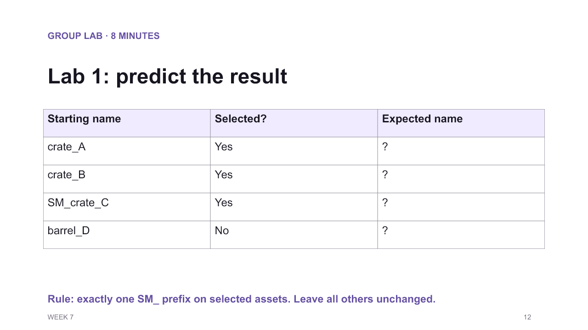
Read aloud
Your group is investigating a fictional batch renamer. Give selected assets exactly one SM_ prefix, preserve the rest of each name, and leave unselected assets unchanged. First write your own predicted names. Then compare within the group. Choose a reader, recorder, evidence checker and reporter. We will look at the actual case result only after you have committed to a prediction. What needs clarification about the task?
Instructor facilitation
Elapsed 82.25–87. Roles and instructions 45 sec, individual prediction 1 min, compare and record 2 min, initial trust/priority judgment 1 min. Keep result slide hidden until 87:00. Use lab1.html, one per group.
Teaching rationale
Retain the topic and refine its explanation within the assessment, overview and peer-testing sequence.
26. Lab 1: evidence and a retest Anchor 12A
Replace the title, body/visual and read-aloud notes with the finalized version below. Keep the anchor, position in the live route, and time allocation.
Previous slide 26Previous slide text
Tool assessment: compare the evidence
Starting name / Expected / Reported result
crate_A / SM_crate_A / SM_crate_A
crate_B / SM_crate_B / SM_crate_B
SM_crate_C / SM_crate_C / SM_SM_crate_C
barrel_D / barrel_D / SM_barrel_D
The tool says “4 assets updated.” Did the task succeed?
Final slide 26
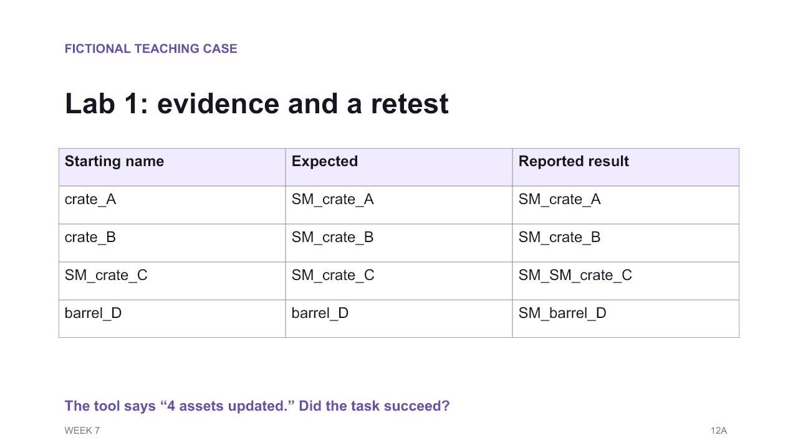
Read aloud
Two rows match the rule. The selected asset that already has a prefix gets another, and the unselected barrel changes. Write one finding using the input, expected result and observed result. Explain why it matters and name a test after a fix. We have no evidence of Undo or another run. Keep your first judgment so we can revisit it after the UX discussion.
Instructor facilitation
Elapsed 87–90. Reveal/inspect 1 min, write finding and retest 1 min, two 20-second reports and 20-second question invitation. Key in facilitator.html. Do not debug fictional code.
Teaching rationale
Retain the topic and refine its explanation within the assessment, overview and peer-testing sequence.
27. UI/UX for artist tools Anchor S4
Keep the existing content, visual and route status.
Previous slide 27
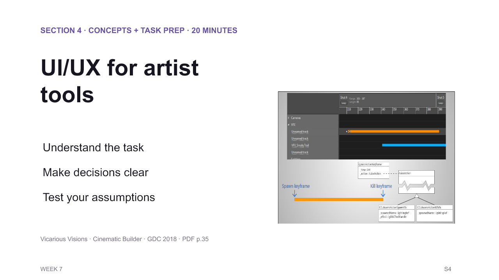
Previous slide text
UI/UX for artist tools
Understand the task
Make decisions clear
Test your assumptions
Final slide 27
Read aloud
We will use your first assessment as a reference point. Look for a principle that explains your judgment, then use it in a task a peer can attempt.
Instructor facilitation
TIME BUDGET: 0.25 min. Elapsed 90–90.25. Transition from their assessment.
Teaching rationale
Add an agenda-matched section title with visual breathing room; transition within the allocated block.
28. Interface and experience Anchor 14
Keep the existing content, visual and route status.
Previous slide 28Previous slide text
Interface and experience
UI: the controls, labels, and layout
UX: reaching the intended result in context
A successful execution can still fail the task
Which part of your first assessment would you defend?
Final slide 28
Read aloud
Return to the renamer. A success count did not make the task successful. Some problems were functional errors; a clearer interface cannot repair the wrong mutation. UX also includes understanding scope, finding results, and recovering. Your initial instinct may be sound. We are adding a more precise way to explain and investigate it.
Instructor facilitation
TIME BUDGET: 0.75 min. Elapsed 90.25–91. Success count versus successful task. Revisit one initial judgment. Pause for a prediction before supplying an explanation. Use the slide question to connect the example to a student tool.
Teaching rationale
Retain the topic and refine its explanation within the assessment, overview and peer-testing sequence.
29. A workflow spans several tools Anchor 14E
Keep the existing content, visual and route status.
Previous slide 29
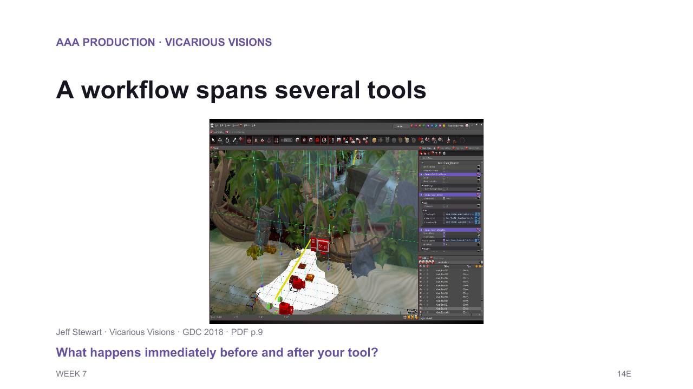
Previous slide text
A workflow spans several tools
What happens immediately before and after your tool?
Final slide 29
Read aloud
Vicarious Visions used Laboratory’s World Builder for Skylanders and Crash levels. For our importer, include the artist’s export and inspection steps when defining the task. Ask where the artist comes from and where they need to go next.
Instructor facilitation
Optional reference only. Do not insert this as an additional explanation during the 150-minute route. Pause for a prediction before supplying an explanation. Use the slide question to connect the example to a student tool.
Teaching rationale
Hide from the normal slideshow. Discuss upstream and downstream workflow in the user-story example. Live destination: 14B.
30. User stories Anchor 14B
Keep the existing content, visual and route status.
Previous slide 30
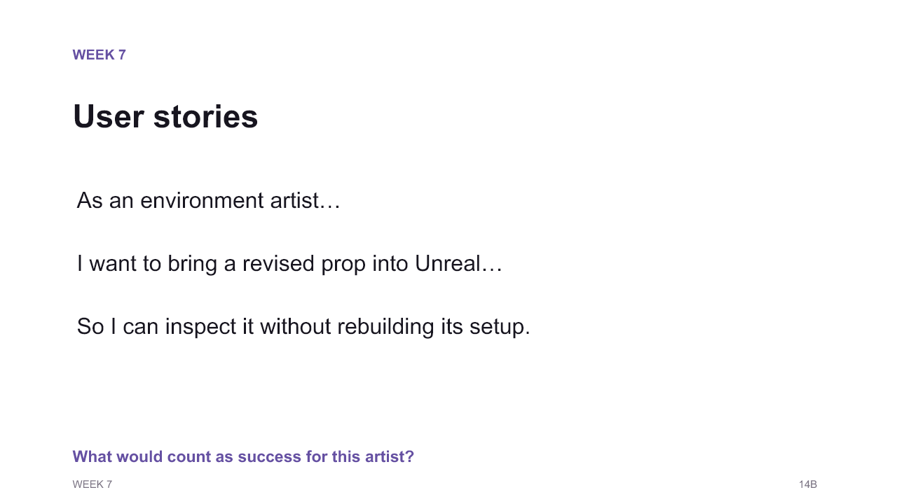
Previous slide text
User stories
As an environment artist…
I want to bring a revised prop into Unreal…
So I can inspect it without rebuilding its setup.
What would count as success for this artist?
Final slide 30
Read aloud
This is a classroom example of role, goal, and benefit. It starts a conversation rather than specifying a particular button. Add observable acceptance checks: the intended asset updates, the result is easy to locate, and unrelated work stays unchanged. Ask the artist about their current workflow before treating the story as a verified requirement. Include what the artist does before opening the tool and what they need to inspect afterwards. The tool window is one part of that workflow.
Instructor facilitation
TIME BUDGET: 1.5 min. Elapsed 91–92.5. Role, goal, benefit and observable success. Include before/after workflow. Pause for a prediction before supplying an explanation. Use the slide question to connect the example to a student tool.
Teaching rationale
Retain the topic and refine its explanation within the assessment, overview and peer-testing sequence.
31. Sketching before implementation Anchor 14C
Keep the existing content, visual and route status.
Previous slide 31Previous slide text
Sketching before implementation
Sketch two plausible approaches
Include a failure state
Test one uncertainty
What can a sketch test? What requires a running tool?
Course interaction sketches · illustrative, not validated
Final slide 31
Read aloud
Sketch enough for someone to attempt a decision: the input, the action, the result, and one failure. Paper is enough to test whether a label or sequence makes sense; Figma can connect screens into a repeatable simulated flow. Neither proves that an Unreal import works. Compare alternatives before polishing one. Dow and colleagues found benefits from parallel prototyping in a small web-advertisement study; applying that idea to our layouts is a teaching inference. The next slide asks you to predict where each layout may help or hinder an artist.
Instructor facilitation
Optional reference only. Do not insert this as an additional explanation during the 150-minute route. Pause for a prediction before supplying an explanation. Use the slide question to connect the example to a student tool.
Teaching rationale
Hide from the normal slideshow. Teach sketching and Figma with the two-layout visual rather than two consecutive explanations. Live destination: 14D.
32. Two layouts for the same task Anchor 14D
Keep the existing content, visual and route status.
Previous slide 32Previous slide text
Two layouts for the same task
Which prediction could a paper test resolve?
Illustrative sketches · neither layout is a tested recommendation
Final slide 32
Read aloud
These sketches support the same import task. One keeps everything visible; the other separates decisions into steps. Predict where a novice might hesitate and where an experienced artist might want to move faster. Test that prediction before choosing a layout. Sketch a starting state, a result and a failure. Paper or linked Figma frames can test interpretation and flow. A running Unreal tool is still needed to test the actual operation.
Instructor facilitation
TIME BUDGET: 1.5 min. Elapsed 92.5–94. Compare two sketches; briefly identify paper/Figma as prototype methods. Pause for a prediction before supplying an explanation. Use the slide question to connect the example to a student tool.
Teaching rationale
Turn sketching advice into a visible comparison students can question.
33. Layout follows the task Anchor 15
Replace the title, body/visual and read-aloud notes with the finalized version below. Keep the anchor, position in the live route, and time allocation.
Previous slide 33Previous slide text
Layout follows the task
Where would you look first? What is unclear?
Detail crops from the course PySide tool · offline sample data
Final slide 33
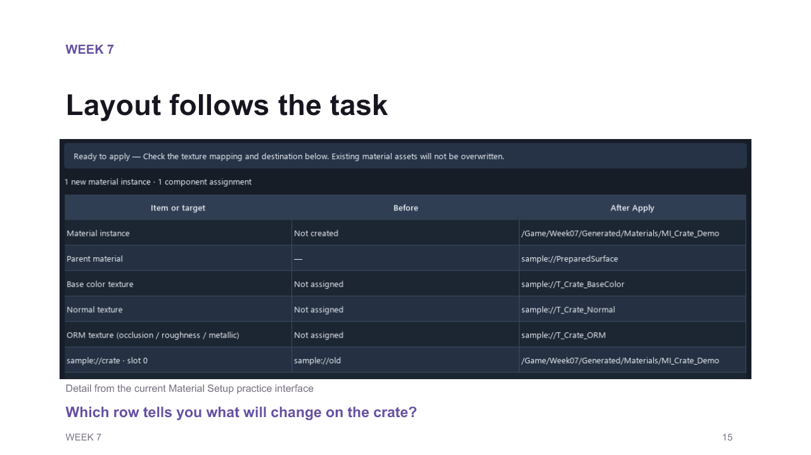
Read aloud
Return to the material task we tried earlier. Find the scope count, then the row naming the crate and slot. That row makes the proposed assignment inspectable. The parent and textures are part of the decision too. Which information would you need before allowing this operation on your own work?
Instructor facilitation
TIME BUDGET: 1.5 min. Elapsed 94–95.5. Scope, preview and action grouping. One short student prediction. Pause for a prediction before supplying an explanation. Use the slide question to connect the example to a student tool.
Teaching rationale
Finalize the classroom activity while preserving the existing time allocation and review anchor.
34. Mental models and visible scope Anchor 14A
Keep the existing content, visual and route status.
Previous slide 34Previous slide text
Mental models and visible scope
Group by the artist’s task
Expose relevant scope
Make expected actions findable
Does filtering the report also change what Apply affects?
Final slide 34
Read aloud
Stewart distinguishes discovering available features from finding a feature you already expect. In this production menu example, the placement of Select Touching beside hide and unhide actions makes the grouping worth questioning. Ask where students would look before pointing it out. Then connect this to our tool: filtering visible rows does not change the Apply plan. Visible labels and scope information help users recover the right context without memorizing implementation rules. A tester’s prediction can reveal a mismatch between their model and the tool’s behavior.
Instructor facilitation
Optional reference only. Do not insert this as an additional explanation during the 150-minute route. Pause for a prediction before supplying an explanation. Use the slide question to connect the example to a student tool.
Teaching rationale
Hide from the normal slideshow. Keep the production mental-model example live; menu findability becomes optional depth. Live destination: 14F.
35. The artist’s model of the work Anchor 14F
Keep the existing content, visual and route status.
Previous slide 35Previous slide text
The artist’s model of the work
Would an artist rather edit a duration or two unrelated events?
Final slide 35
Read aloud
Stewart’s Cinematic Builder example contrasts an artist-facing VFX duration with underlying spawn and kill keyframes. The artist wants to reason about when an effect begins and how long it lasts. Exposing two unrelated implementation events made that task harder to understand. This does not mean hiding all technical detail: expose details when they support the user’s next decision. For our importer, a meaningful revised-prop result may be more useful than a list of internal package operations.
Instructor facilitation
TIME BUDGET: 1.5 min. Elapsed 95.5–97. Artist-facing duration versus internal spawn/kill events. One production example. Pause for a prediction before supplying an explanation. Use the slide question to connect the example to a student tool.
Teaching rationale
Use a concrete production UI to explain mental models.
36. State and feedback Anchor 15A
Replace the title, body/visual and read-aloud notes with the finalized version below. Keep the anchor, position in the live route, and time allocation.
Previous slide 36Previous slide text
State and feedback
What information belongs beside the action rather than in an alert?
Detail crops from the course PySide tool · empty offline state
Final slide 36
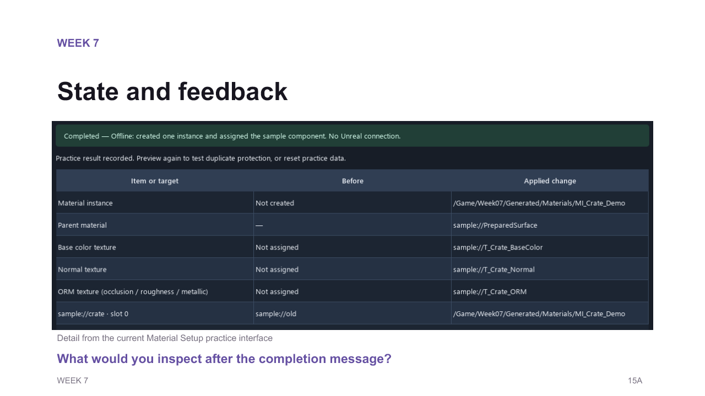
Read aloud
Completed tells us that this operation returned successfully. The table changes to applied rows, and Apply becomes unavailable because the plan has been consumed. We still inspect the affected target and protected scope. A completion message alone does not establish that the user achieved the intended task.
Instructor facilitation
TIME BUDGET: 1 min. Elapsed 97–98. State and next action. Explain the unavailable Apply control. Pause for a prediction before supplying an explanation. Use the slide question to connect the example to a student tool.
Teaching rationale
Finalize the classroom activity while preserving the existing time allocation and review anchor.
37. A UI state becomes a Qt decision Anchor 15G
Replace the title, body/visual and read-aloud notes with the finalized version below. Keep the anchor, position in the live route, and time allocation.
Previous slide 37Previous slide text
A UI state becomes a Qt decision
c = self.controller
self.apply_button.setEnabled(
c.can_apply
)
# Controller property:
return self.change_count > 0
window.py and controller.py · related excerpts, not one runnable block
Final slide 37
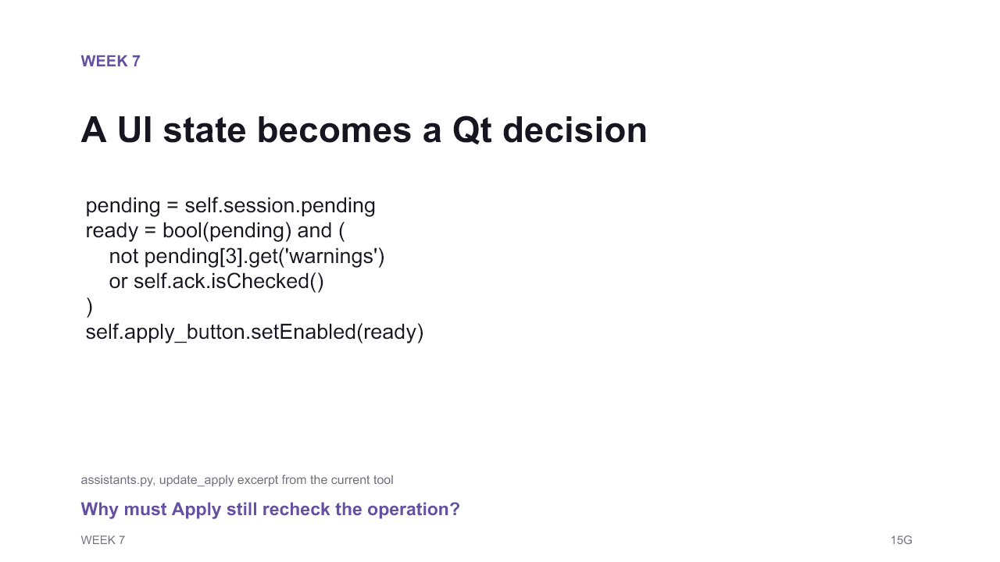
Read aloud
This is the current assistant interface. A pending preview must exist. If it contains warnings, the user must acknowledge them before Apply becomes available. The session still rechecks the operation when Apply runs. Enabling a button does not replace backend validation, and acknowledging a warning cannot bypass a hard limit.
Instructor facilitation
TIME BUDGET: 1 min. Elapsed 98–99. Point to enabled-state logic. No Qt syntax walkthrough. Point to the disabled control, then return to the backend guard. Ask why both layers are necessary.
Teaching rationale
Finalize the classroom activity while preserving the existing time allocation and review anchor.
38. An error should support recovery Anchor 15D
Keep the existing content, visual and route status.
Previous slide 38
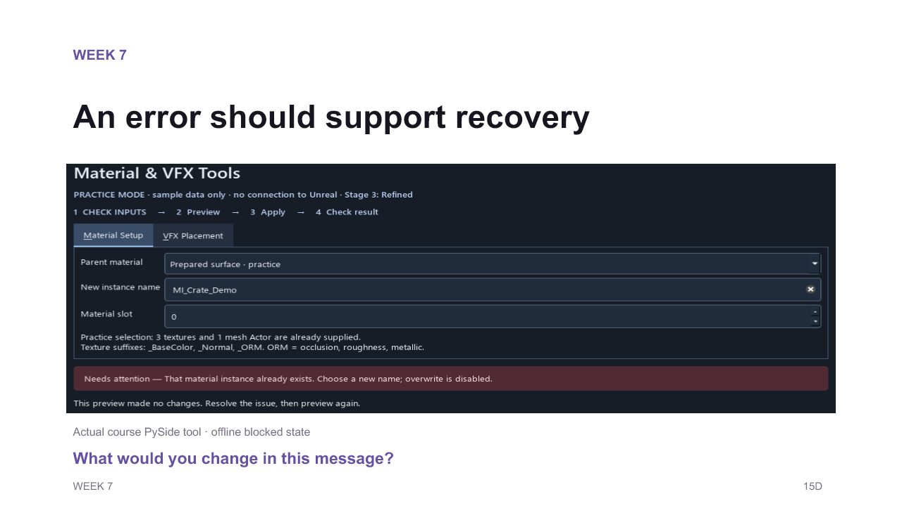
Previous slide text
An error should support recovery
What would you change in this message?
Actual course PySide tool · offline blocked state
Final slide 38
Read aloud
Read the message as an artist who has not seen the code. Can you identify the problem, the affected input, and the next action? A raw exception may help the developer, but the artist also needs a way to resume the task.
Instructor facilitation
TIME BUDGET: 1 min. Elapsed 99–100. Ask for the next recovery action, then take one answer. Pause for a prediction before supplying an explanation. Use the slide question to connect the example to a student tool.
Teaching rationale
Use a real practice interface as critique material rather than a claimed ideal UI.
39. Recovery and accessibility Anchor 15B
Keep the existing content, visual and route status.
Previous slide 39Previous slide text
Recovery and accessibility
Review consequential changes before applying them
Test the recovery path you actually offer
Keep focus, labels, and status understandable
# Existing PySide view implementation
self.preview.setAccessibleName(
"Selected Actors change preview"
)
Could a classmate recover without help?
Final slide 39
Read aloud
Recovery can mean Undo for an editor transaction, or a separate restore and reimport procedure. Do not promise that all operations can be undone. The code excerpt names the preview for accessibility; it is one implementation detail, not a complete accessibility guarantee. Check keyboard operation, visible focus, readable text, and status cues that do not rely on color alone.
Instructor facilitation
TIME BUDGET: 1 min. Elapsed 100–101. Keyboard, focus, labels and recovery. One accessible name is only a starting point. Pause for a prediction before supplying an explanation. Use the slide question to connect the example to a student tool.
Teaching rationale
Retain the topic and refine its explanation within the assessment, overview and peer-testing sequence.
Keep the existing content, visual and route status.
Previous slide 40Previous slide text
Mission Kontrol: repeatable testing
What knowledge should a tester need before starting?
Final slide 40
Read aloud
NetherRealm’s Mission Kontrol lets developers request actions without reproducing fighting-game input combinations. The game communicates the available move list to the tool, which avoids requiring the tester to memorize that list. This is an Unreal Slate and game-automation case, not Python editor scripting. The transferable design question is what knowledge the interface can supply at the moment it is needed. In our peer test, provide a reproducible starting state and an observable goal so we can evaluate the tool rather than the reviewer’s memory.
Instructor facilitation
Optional reference only. Do not insert this as an additional explanation during the 150-minute route. Pause for a prediction before supplying an explanation. Use the slide question to connect the example to a student tool.
Teaching rationale
Hide from the normal slideshow. Introduce Mission Kontrol briefly on the QA iteration slide. Live destination: 16C.
41. Feedback changes the interface Anchor 16C
Keep the existing content, visual and route status.
Previous slide 41
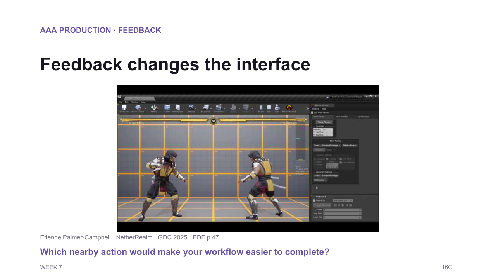
Previous slide text
Feedback changes the interface
Which nearby action would make your workflow easier to complete?
Final slide 41
Read aloud
QA feedback led Mission Kontrol to add controls for both players and frame stepping. Previously, debug actions could depend on gamepad combinations, but someone working in the tool might not be holding a gamepad. The lesson is specific: look at adjacent actions required to finish the task. A technically functional panel can still force awkward handoffs. Ask your tester what they need immediately before and after the operation, then observe whether the interface supports those steps. Mission Kontrol is NetherRealm’s Unreal-based developer tool for repeatable character actions. It uses Slate and game automation rather than our Python editor recipe.
Instructor facilitation
TIME BUDGET: 1.5 min. Elapsed 101–102.5. Brief Mission Kontrol context; QA feedback changed adjacent controls. Pause for a prediction before supplying an explanation. Use the slide question to connect the example to a student tool.
Teaching rationale
Show an actual iteration outcome instead of only recommending feedback.
42. Evidence before explanation Anchor 16
Keep the existing content, visual and route status.
Previous slide 42Previous slide text
Evidence before explanation
Evidence / Example
Observation / The tester chose the wrong destination
Possible explanation / The destination label may be unclear
Proposed change / Show the full target path
Retest / Can a new tester choose the intended target without help?
What questions remain before we begin testing?
Final slide 42
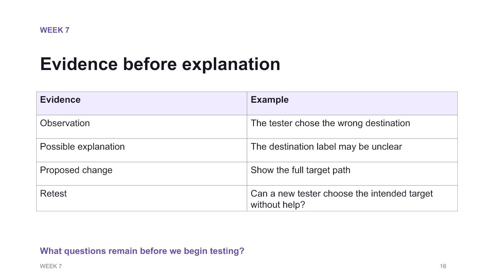
Read aloud
Separate what happened from why you think it happened. A preference can be useful, but it does not replace observing the task. Keep the version stable across today’s three rounds so findings can be compared. If an emergency fix is necessary, record it. Afterwards choose a change and retest. Three classmates provide useful leads, not proof that every user will succeed.
Instructor facilitation
Optional reference only. Do not insert this as an additional explanation during the 150-minute route. Pause for a prediction before supplying an explanation. Use the slide question to connect the example to a student tool.
Teaching rationale
Hide from the normal slideshow. Use the testing loop to distinguish observation, explanation and retest. Live destination: 16E.
43. A test produces the next question Anchor 16E
Keep the existing content, visual and route status.
Previous slide 43Previous slide text
A test produces the next question
What questions remain before you write the peer-test task?
Course testing loop · a possible explanation is not yet a finding
Final slide 43
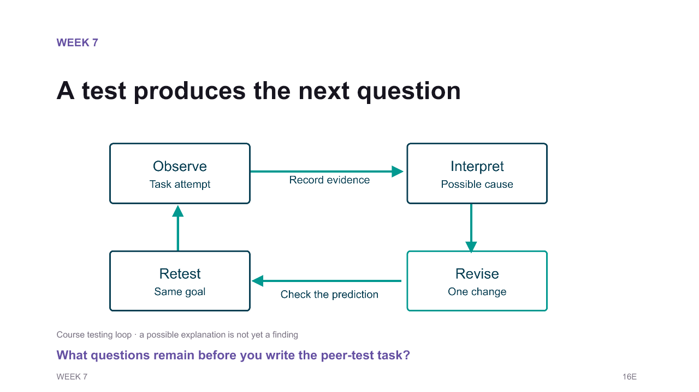
Read aloud
An observation gives you evidence. Your explanation is still a hypothesis. Make one change that addresses it and repeat the task. If the difficulty remains, revise the explanation rather than merely adding more instructions. For example, the tester chose the wrong destination. That is the observation. An unclear label is a possible explanation. Showing the full path is a proposed change, and a new tester’s attempt is the retest. What questions do you have before writing your own task?
Instructor facilitation
TIME BUDGET: 3.5 min. Elapsed 102.5–106. 90 sec observation/hypothesis/retest example, then 2 min student questions or recovery reserve. Pause for a prediction before supplying an explanation. Use the slide question to connect the example to a student tool.
Teaching rationale
Make the observation–revision–retest loop explicit before students write tasks.
44. Your peer-test task Anchor 16A
Replace the title, body/visual and read-aloud notes with the finalized version below. Keep the anchor, position in the live route, and time allocation.
Previous slide 44
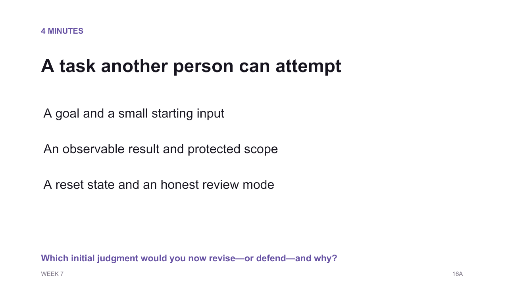
Previous slide text
A task another person can attempt
A goal and a small starting input
An observable result and protected scope
A reset state and an honest review mode
Which initial judgment would you now revise—or defend—and why?
Final slide 44
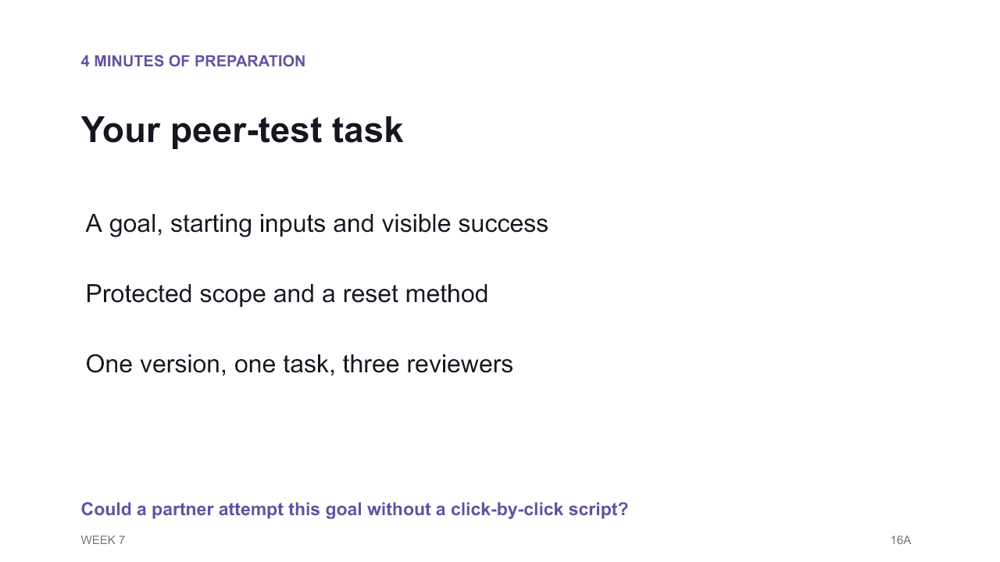
Read aloud
Use the preparation sheet to write one task that fits a two-minute attempt. For example, give these three selected props exactly one prefix while leaving the unselected light unchanged. Define success and how you will restore the same input. Declare hands-on, recorded or concept review. Keep the same task and version across rounds so we can compare observations. If you have no runnable tool, sketch the input, action and intended output. Which part of your task needs clarification?
Instructor facilitation
Elapsed 106–110. First 30 sec revisit Lab 1 judgment without erasing it. 2.5 min write task and prepare state. Final 1 min partner/staff readiness check: goal, inputs, success, protected scope, reset and mode. Keep conceptual discussion out of this writing window.
Teaching rationale
Finalize the classroom activity while preserving the existing time allocation and review anchor.
45. Peer testing Anchor S5
Keep the existing content, visual and route status.
Previous slide 45Previous slide text
Peer testing
Observe an attempt
Record the evidence
Choose a retest
Final slide 45
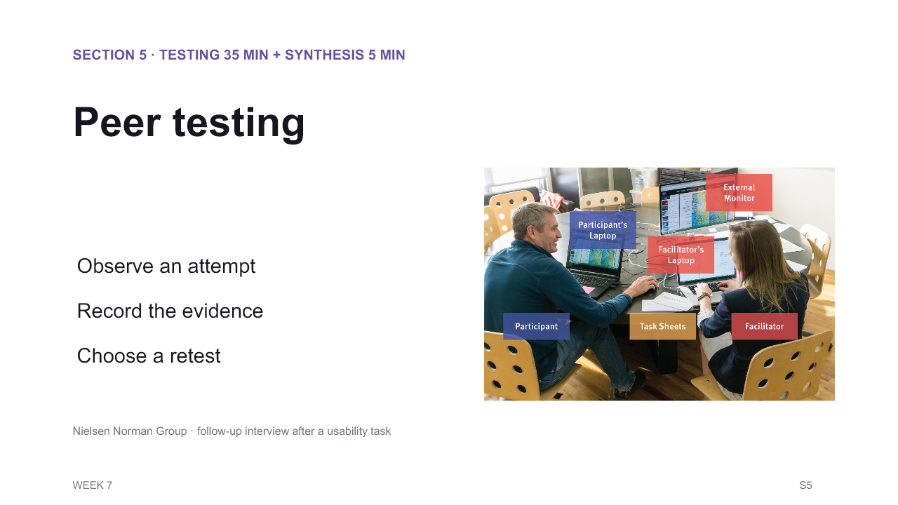
Read aloud
Now apply the ideas immediately. This NN/g photo shows the participant and facilitator during follow-up after a task; our lab uses a simpler setup with the same separation of roles.
Instructor facilitation
TIME BUDGET: 0.25 min. Elapsed 110–110.25. Introduce observer and participant roles.
Teaching rationale
Add an agenda-matched section title with visual breathing room; transition within the allocated block.
46. Lab 2: three peer reviews Anchor 17
Replace the title, body/visual and read-aloud notes with the finalized version below. Keep the anchor, position in the live route, and time allocation.
Previous slide 46Previous slide text
Peer testing: three perspectives
Author gives the goal
Partner attempts the task
Record behavior and help
What will you observe before suggesting a redesign?
NN/g · testing roles · use the author’s machine and record assistance
Final slide 46
Read aloud
Each person reviews three classmates in a group of four. Use the author’s prepared machine. The author gives the goal and necessary domain information, then lets the reviewer attempt it. Say what you expect and record any help. Use the same task and version each round. If launch is blocked for a minute, record the blocker and switch to your declared recording or concept. That evidence cannot establish untested execution. Ask now if the roles are unclear.
Instructor facilitation
1 min inside elapsed 110–113 briefing. No installs, account sharing or setup debugging. Stop immediately if real work is at risk. Author may help and must record it.
Teaching rationale
Finalize the classroom activity while preserving the existing time allocation and review anchor.
47. A ten-minute reciprocal round Anchor 18
Replace the title, body/visual and read-aloud notes with the finalized version below. Keep the anchor, position in the live route, and time allocation.
Previous slide 47Previous slide text
A ten-minute reciprocal round
Time / Action
0:00–0:30 / Author states goal, inputs, success, and safety
0:30–2:30 / Partner attempts the task
2:30–4:00 / Record evidence and share
4:00–8:00 / Swap roles and repeat
8:00–10:00 / Finish both records and reset
Allow an attempt before coaching; record assistance when given.
Final slide 47
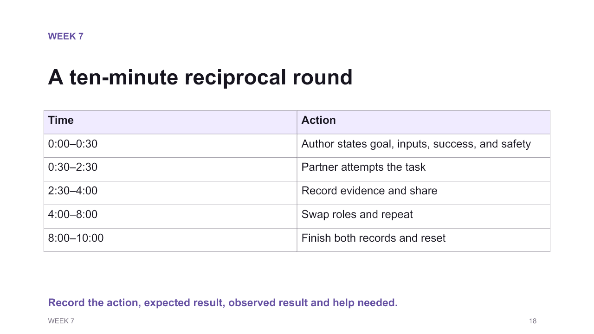
Read aloud
In each pair the later letter tests the earlier letter’s tool first. You have thirty seconds for the goal, two minutes for the attempt, then ninety seconds to record and explain your finding. At four minutes swap roles. At eight minutes finish both sheets and reset. Record a supported strength. If no fault appeared, say so and propose a useful next test.
Instructor facilitation
TIME BUDGET: 1 min. Elapsed 111.25–112.25. Explain the reciprocal ten-minute round. Pause for a prediction before supplying an explanation. Use the slide question to connect the example to a student tool.
Teaching rationale
Retain the topic and refine its explanation within the assessment, overview and peer-testing sequence.
48. Partner rotations Anchor 19
Replace the title, body/visual and read-aloud notes with the finalized version below. Keep the anchor, position in the live route, and time allocation.
Previous slide 48Previous slide text
Partner rotations
One minute to switch between rounds
Keep the same task and record the version
Round / Pair 1 / Pair 2
1 / A ↔ B / C ↔ D
2 / A ↔ C / B ↔ D
3 / A ↔ D / B ↔ C
What repeats across reviews? What depends on the reviewer?
Final slide 48
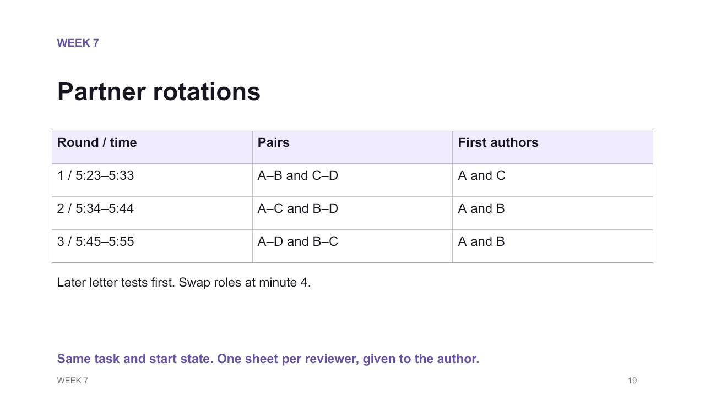
Read aloud
Stay within your group and follow these pairings. The later letter tests the earlier letter’s tool first. Both authors receive a review before you change partners. Give your sheet to the author immediately. If a round is interrupted, label the review incomplete. Three distinct classmates are possible in a full group of four. Tell me now if your group needs a different arrangement.
Instructor facilitation
45 sec for letters, then three ten-minute rounds with one-minute switches. Use facilitator.html for staff announcements and attendance alternatives. Clock assumes 3:30 PM start. dashboard.html supplies a manual visible round timer.
Teaching rationale
Retain the topic and refine its explanation within the assessment, overview and peer-testing sequence.
49. One revision supported by evidence Anchor 20
Replace the title, body/visual and read-aloud notes with the finalized version below. Keep the anchor, position in the live route, and time allocation.
Previous slide 49
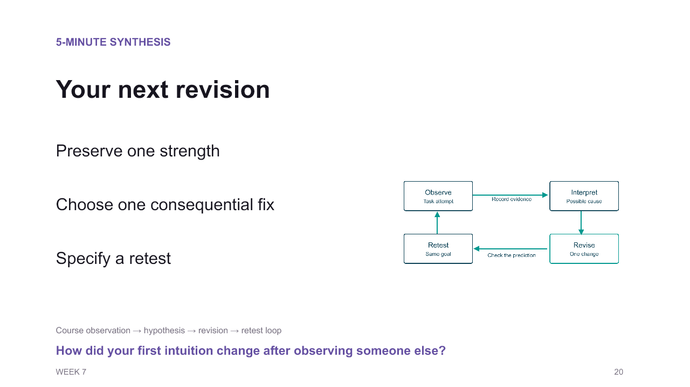
Previous slide text
Your next revision
Preserve one strength
Choose one consequential fix
Specify a retest
How did your first intuition change after observing someone else?
Course observation → hypothesis → revision → retest loop
Final slide 49
Read aloud
Read the three reviews you received. Choose a priority because of its consequence and evidence, not simply the number of votes. Preserve one thing that worked. Write the smallest useful revision or experiment and exactly how you would retest it. If feedback conflicts, compare tasks, versions, review modes and help before deciding. You may keep your initial design if the evidence supports it. Record any unresolved question.
Instructor facilitation
5:55–5:57 compare reviews. 5:57–5:59 write priority, evidence and retest. 5:59–6:00 record changed judgment/unresolved question. No full-room round robin. This activity creates no new grade, deadline or submission policy.
Teaching rationale
Finalize the classroom activity while preserving the existing time allocation and review anchor.
50. The current project is part of the input Anchor 07B
Keep the existing content, visual and route status.
Previous slide 50Previous slide text
The current project is part of the input
What context would you include in a useful run report?
Existing course Unreal capture · project, level and Outliner context
Final slide 50
Read aloud
Before running an edit, identify the project and level. Check what is selected in the Outliner and what the tool reports. A familiar asset name can exist in more than one project. Your tool should make its working context inspectable.
Instructor facilitation
Pause for a prediction before supplying an explanation. Use the slide question to connect the example to a student tool.
Teaching rationale
Provide a concrete editor-context check without extending the core API introduction.
51. Reimport needs a prediction Anchor 10B
Keep the existing content, visual and route status.
Previous slide 51Previous slide text
Reimport needs a prediction
Change in Maya / Inspect in Unreal
Move the pivot / Placement and transform behavior
Revise the mesh / Same intended asset updated
Change material slots / Assignments still match their purpose
How would you detect an unintended duplicate?
Final slide 51
Read aloud
Before reimporting, predict one observable change and one thing that should remain stable. Then inspect both. The importer and its settings control the result, so repeat this check in the teaching project rather than assuming every asset behaves identically.
Instructor facilitation
Pause for a prediction before supplying an explanation. Use the slide question to connect the example to a student tool.
Teaching rationale
Separate an import call from the evidence needed to validate the bridge.
52. A preview is a temporary agreement Anchor 09C
Keep the existing content, visual and route status.
Previous slide 52Previous slide text
A preview is a temporary agreement
What else could make a preview stale?
Course state model · changed inputs require a new preview
Final slide 52
Read aloud
A preview describes a particular set of inputs. If the artist changes selection or another relevant value, the old preview may no longer describe the next edit. Invalidate it or rebuild it. After Apply, compare the actual result with the prediction.
Instructor facilitation
Pause for a prediction before supplying an explanation. Use the slide question to connect the example to a student tool.
Teaching rationale
Explain why a preview button alone does not guarantee correct scope.
53. Change and reset Anchor 09E
Keep the existing content, visual and route status.
Previous slide 53Previous slide text
Change and reset
What can this animation show? What remains unverified?
Animated comparison of existing captures · not continuous execution footage
Final slide 53
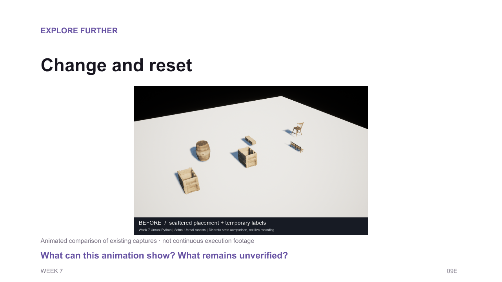
Read aloud
Watch the prepared comparison, then describe the changed values. Use the report and recovery demonstration to verify what the animation cannot show. The animation compares existing captured states; it does not show elapsed execution time.
Instructor facilitation
Pause for a prediction before supplying an explanation. Use the slide question to connect the example to a student tool.
Teaching rationale
Offer an offline motion reference with honest limits.
54. A click connects to an operation Anchor 15C
Keep the existing content, visual and route status.
Previous slide 54Previous slide text
A click connects to an operation
Where would you stop an invalid operation?
Existing course Qt schematic · signal, callback and visible result
Final slide 54
Read aloud
Qt emits a signal when the button is activated. A connected callback runs the operation and updates the result. This is where a UI decision becomes code: the callback can validate input, prevent duplicate work, and report the outcome.
Instructor facilitation
Pause for a prediction before supplying an explanation. Use the slide question to connect the example to a student tool.
Teaching rationale
Supply the requested light technical implementation tie-in.
55. Warning and blocked states Anchor 15E
Keep the existing content, visual and route status.
Previous slide 55Previous slide text
Warning and blocked states
Can the artist proceed? What evidence supports that choice?
Actual course PySide tool · offline warning state
Final slide 55
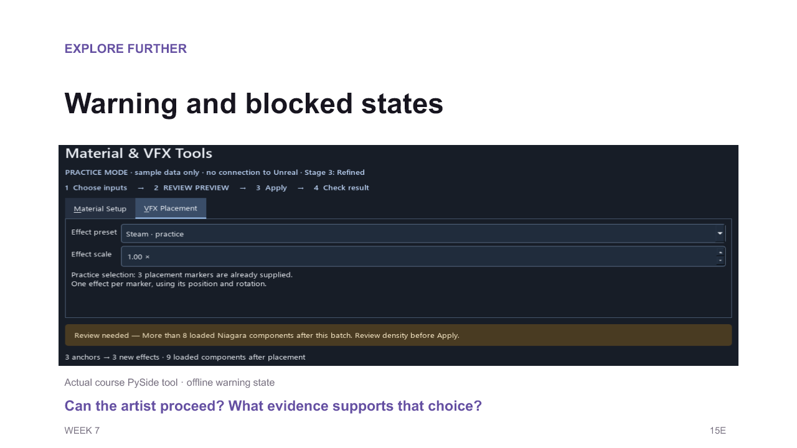
Read aloud
A warning asks the artist to make a decision. A blocked state means a required condition is missing. Choose the behavior based on the operation’s consequence. Avoid treating every status update as an interruption.
Instructor facilitation
Pause for a prediction before supplying an explanation. Use the slide question to connect the example to a student tool.
Teaching rationale
Distinguish UI states that often collapse into generic alerts.
56. Keyboard and focus Anchor 15F
Keep the existing content, visual and route status.
Previous slide 56
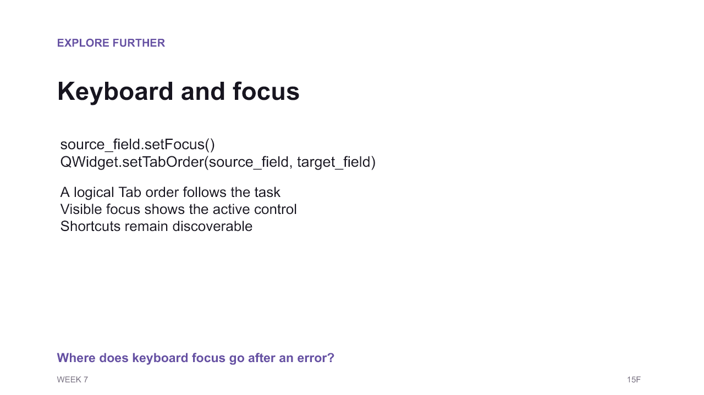
Previous slide text
Keyboard and focus
A logical Tab order follows the task
Visible focus shows the active control
Shortcuts remain discoverable
source_field.setFocus()
QWidget.setTabOrder(source_field, target_field)
Where does keyboard focus go after an error?
Final slide 56
Read aloud
Try completing the task without a mouse. Track where focus moves and whether you can tell which control is active. These Qt calls illustrate focus and tab order, but the surrounding widget setup is omitted. Test the behavior in the actual application.
Instructor facilitation
Pause for a prediction before supplying an explanation. Use the slide question to connect the example to a student tool.
Teaching rationale
Expand accessibility into a concrete implementation and test.
57. Testing continues after release Anchor 16D
Keep the existing content, visual and route status.
Previous slide 57Previous slide text
Testing continues after release
How will users report a problem after your first release?
Final slide 57
Read aloud
The talk describes focused QA, a studio introduction, and continued maintenance. Our peer lab is one small iteration. After the lab, make a targeted change and run the task again with someone who did not watch you build it.
Instructor facilitation
Pause for a prediction before supplying an explanation. Use the slide question to connect the example to a student tool.
Teaching rationale
Place classroom testing within a longer tool lifecycle.
58. A useful observation record Anchor 16F
Keep the existing content, visual and route status.
Previous slide 58Previous slide text
A useful observation record
Observed / Still uncertain
Paused at the destination field / Whether the label or the path caused hesitation
Needed one hint to continue / Whether the task wording supplied enough context
Changed an unselected item / The code cause and the affected scope
Which statement could another observer verify?
Final slide 58
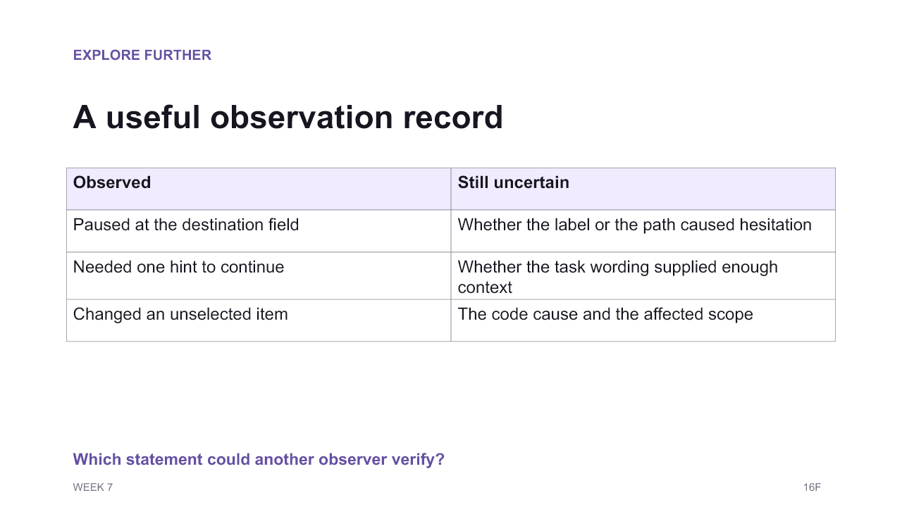
Read aloud
Record the behavior and the help you gave. Avoid writing only that the tool was confusing or intuitive. A precise observation gives the author something they can investigate and gives you a basis for choosing the next test.
Instructor facilitation
Pause for a prediction before supplying an explanation. Use the slide question to connect the example to a student tool.
Teaching rationale
Give students an example of usable evidence before peer review.
59. Material automation: a later connection Anchor A1
Keep the existing content, visual and route status.
Previous slide 59Previous slide text
Material automation: a later connection
What should remain editable by the artist?
Actual practice-mode interface · sample data, no Unreal connection
Final slide 59
Read aloud
This local practice panel illustrates how a prepared parent material, texture inputs, a new instance, and a component assignment can be reviewed before applying. It is not a capture of a live Unreal operation. Oster’s Asset Setup and Texture Utility series provide related Unreal Python study. Keep the first example bounded rather than constructing a full material system during this lesson.
Instructor facilitation
Pause for a prediction before supplying an explanation. Use the slide question to connect the example to a student tool.
Teaching rationale
Retain the topic and refine its explanation within the assessment, overview and peer-testing sequence.
60. Qt: small implementation examples Anchor A2
Keep the existing content, visual and route status.
Previous slide 60Previous slide text
Qt: small implementation examples
Layouts express relationships
Signals connect actions and feedback
form = QFormLayout()
form.addRow("Source file", source_field)
form.addRow("Destination", target_field)
source_field.textChanged.connect(update_preview)
import_button.clicked.connect(run_import)
Which UX decision does each line support?
Final slide 60
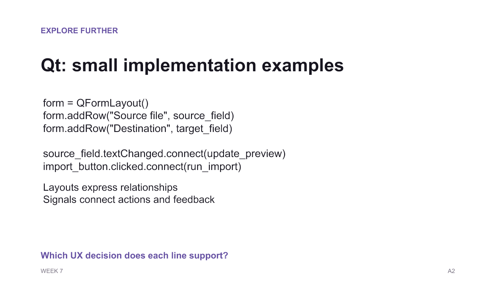
Read aloud
These are illustrative fragments requiring surrounding widget setup and callbacks. They are not a complete importer. Qt can illustrate general Python GUI concepts while Editor Utility Widgets provide an Unreal-native comparison. Neither toolkit determines the quality of the workflow on its own.
Instructor facilitation
Pause for a prediction before supplying an explanation. Use the slide question to connect the example to a student tool.
Teaching rationale
Retain the topic and refine its explanation within the assessment, overview and peer-testing sequence.
61. Other production references Anchor A3
Keep the existing content, visual and route status.
Previous slide 61
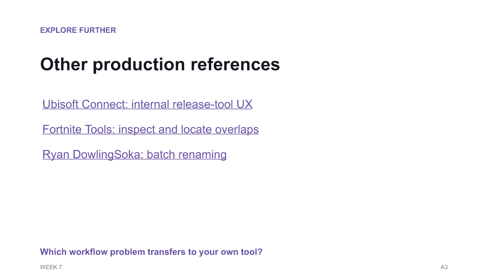
Previous slide text
Other production references
Which workflow problem transfers to your own tool?
Final slide 61
Read aloud
Ubisoft’s GDC session describes the Pylon release tool’s UX redesign before Rainbow Six Extraction. Epic’s Fortnite Tools and Ryan’s batch-renaming tutorial provide different editor examples. Compare the user’s task and the evidence each tool exposes. These examples use different technologies and should not be treated as one Python pipeline.
Instructor facilitation
Pause for a prediction before supplying an explanation. Use the slide question to connect the example to a student tool.
Teaching rationale
Retain the topic and refine its explanation within the assessment, overview and peer-testing sequence.
62. Unreal production architecture Anchor A7
Keep the existing content, visual and route status.
Previous slide 62
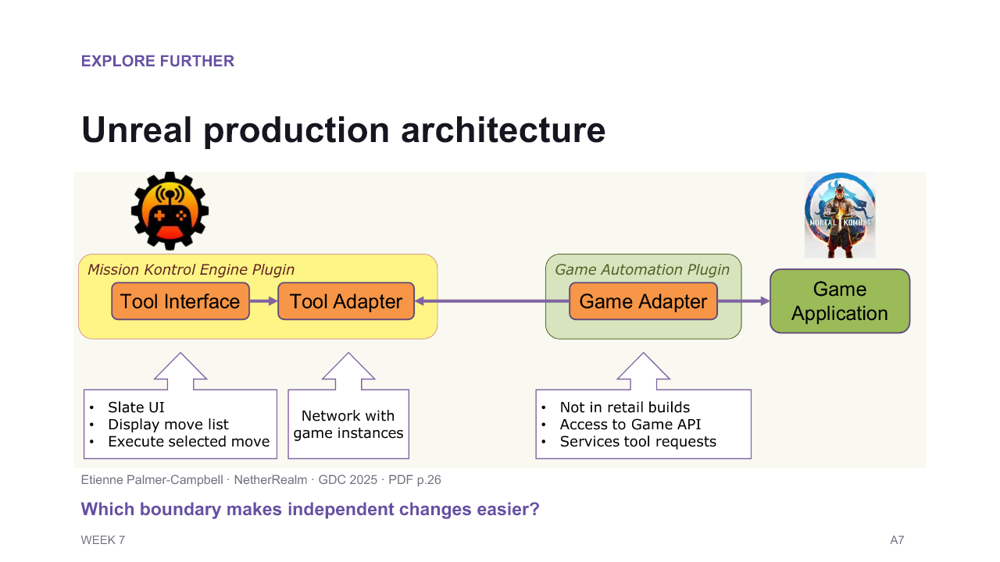
Previous slide text
Unreal production architecture
Which boundary makes independent changes easier?
Final slide 62
Read aloud
Mission Kontrol separates its Slate interface from network adapters and game automation. This is a production architecture example, not a Python editor recipe. Compare the separation of responsibilities with our smaller UI and operation model.
Instructor facilitation
Pause for a prediction before supplying an explanation. Use the slide question to connect the example to a student tool.
Teaching rationale
Offer technical depth without implying runtime Python support.
63. Existing Unreal widgets as references Anchor A8
Keep the existing content, visual and route status.
Previous slide 63Previous slide text
Existing Unreal widgets as references
Which familiar editor control could guide your design?
Final slide 63
Read aloud
The Widget Reflector can inspect Unreal’s Slate widget hierarchy and connect a visible widget to implementation information. Use it as an exploration route when you move beyond the Python and Editor Utility examples in this class.
Instructor facilitation
Pause for a prediction before supplying an explanation. Use the slide question to connect the example to a student tool.
Teaching rationale
Provide a professional implementation reference for later Slate work.
64. Shareable reproduction steps Anchor A9
Keep the existing content, visual and route status.
Previous slide 64Previous slide text
Shareable reproduction steps
What would you attach to a useful bug report?
Final slide 64
Read aloud
Mission Kontrol supports sharing test scripts as JSON. For your tool, consider saving the input and settings needed to repeat a reported problem. A screenshot of the final failure may not include the starting conditions.
Instructor facilitation
Pause for a prediction before supplying an explanation. Use the slide question to connect the example to a student tool.
Teaching rationale
Connect data-driven tooling with reproducibility.
65. Production feedback is evidence with limits Anchor A10
Keep the existing content, visual and route status.
Previous slide 65Previous slide text
Production feedback is evidence with limits
What would you need before interpreting this as a causal result?
Final slide 65
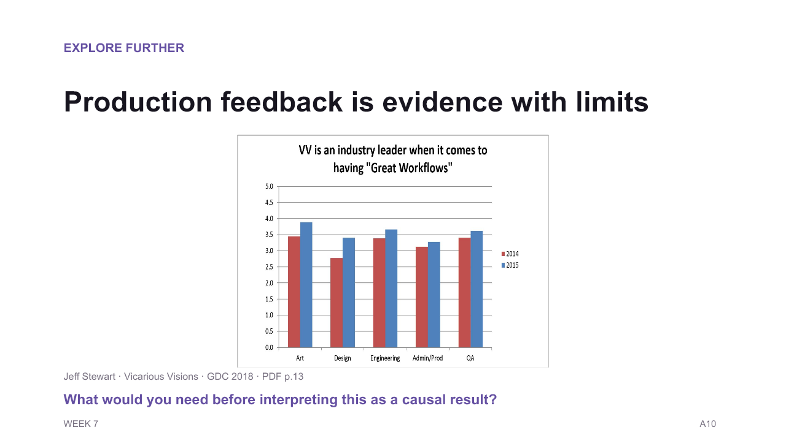
Read aloud
This published chart reports Vicarious Visions’ internal workflow survey. Treat it as studio-reported feedback. It does not establish that a single feature caused a productivity gain. In your lab, combine ratings with observed task behavior.
Instructor facilitation
Pause for a prediction before supplying an explanation. Use the slide question to connect the example to a student tool.
Teaching rationale
Include a real chart while teaching careful interpretation.
66. A production prototype evolves Anchor A11
Keep the existing content, visual and route status.
Previous slide 66Previous slide text
A production prototype evolves
Which uncertainty should your next prototype answer?
Final slide 66
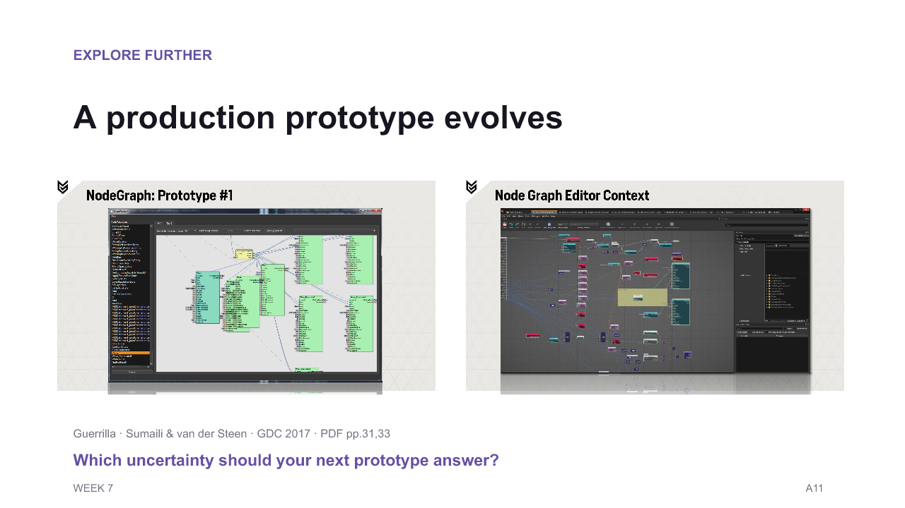
Read aloud
These are published stages in Guerrilla’s node-editor work. A prototype lets a team investigate an interaction before refining the full tool. For your own project, identify what the prototype proves and what it leaves untested.
Instructor facilitation
Pause for a prediction before supplying an explanation. Use the slide question to connect the example to a student tool.
Teaching rationale
Preserve actual prototype history as an optional comparison.
67. A different discipline, a different view Anchor A12
Keep the existing content, visual and route status.
Previous slide 67Previous slide text
A different discipline, a different view
Which controls would your target artist never need?
Final slide 67
Read aloud
Compare this conversation editor with the level-editor view shown earlier. They support different content decisions. Reusing a framework does not require showing every user the same controls.
Instructor facilitation
Pause for a prediction before supplying an explanation. Use the slide question to connect the example to a student tool.
Teaching rationale
Show how a shared tool environment supports different disciplines.
68. Reveal detail where the artist is looking Anchor A13
Keep the existing content, visual and route status.
Previous slide 68Previous slide text
Reveal detail where the artist is looking
What detail should be persistent, selected, or shown on hover?
Final slide 68
Read aloud
Play the sixteen-second world-map clip from the companion media page. Watch the cursor: an item gains a highlight and a readable label on hover. Ask what can remain visible and what can appear only when needed. For a classroom Unreal tool, the comparable decision might be a concise result list with additional information on selection. This clip demonstrates a production interaction; it does not establish that hover-only information is accessible to everyone. Preserve keyboard and persistent-detail alternatives where needed.
Instructor facilitation
Pause for a prediction before supplying an explanation. Use the slide question to connect the example to a student tool.
Teaching rationale
Use actual motion to discuss contextual feedback and its accessibility limits.
69. Python and Unreal: further study Anchor A4
Keep the existing content, visual and route status.
Previous slide 69
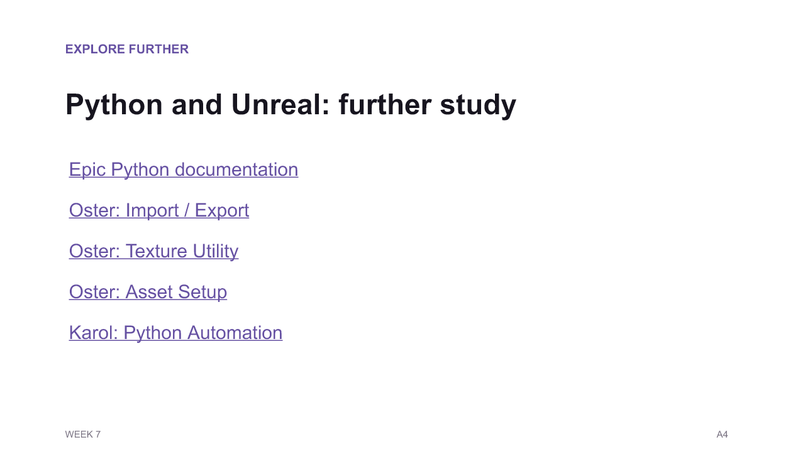
Previous slide text
Python and Unreal: further study
Final slide 69
Read aloud
Use official documentation for API behavior and the course sources for worked examples. The complete source audit preserves the individual tutorial episodes and the playlist already studied. Paid courses are optional instructor preparation, not student requirements.
Instructor facilitation
Teaching rationale
Retain the topic and refine its explanation within the assessment, overview and peer-testing sequence.
70. UI/UX: further study Anchor A5
Keep the existing content, visual and route status.
Previous slide 70Previous slide text
UI/UX: further study
Final slide 70
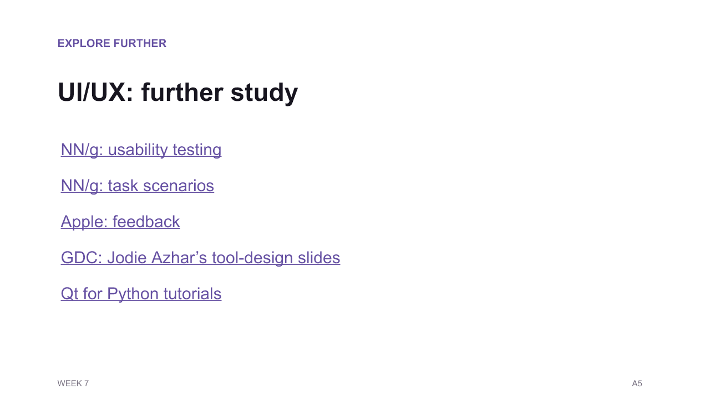
Read aloud
These sources support different kinds of claims: professional guidance, examples of practice, and technical implementation. They do not all provide experimental evidence. Use the research supplement for the parallel-prototyping paper and its limits.
Instructor facilitation
Teaching rationale
Retain the topic and refine its explanation within the assessment, overview and peer-testing sequence.
71. Later directions Anchor A6
Keep the existing content, visual and route status.
Previous slide 71
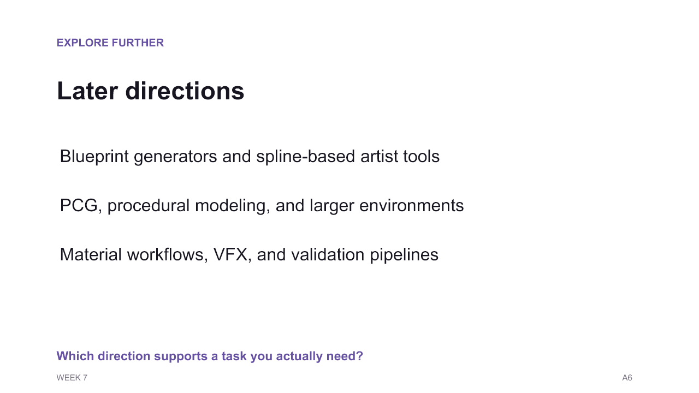
Previous slide text
Later directions
Blueprint generators and spline-based artist tools
PCG, procedural modeling, and larger environments
Material workflows, VFX, and validation pipelines
Which direction supports a task you actually need?
Final slide 71
Read aloud
These are future study directions rather than additional Week 7 objectives. The complete source audit includes Oster’s later topics, the Blueprint courses, and the original C++ editor-tools course. SimonDev and Ben Cloward remain shader-related background rather than Unreal editor-tooling backbones.
Instructor facilitation
Pause for a prediction before supplying an explanation. Use the slide question to connect the example to a student tool.
Teaching rationale
Retain the topic and refine its explanation within the assessment, overview and peer-testing sequence.